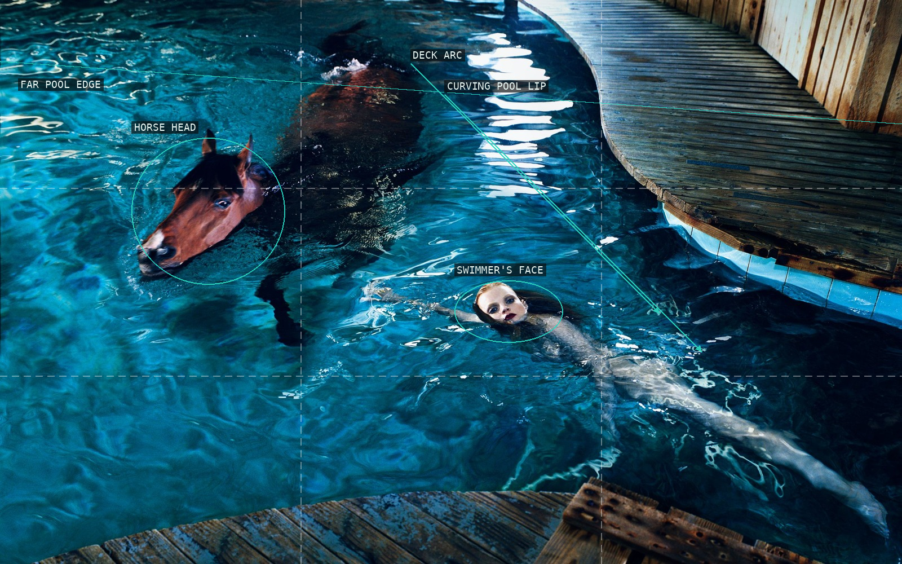
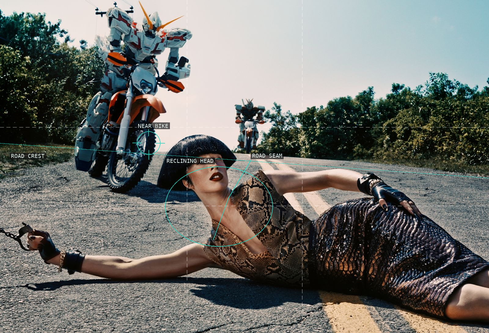
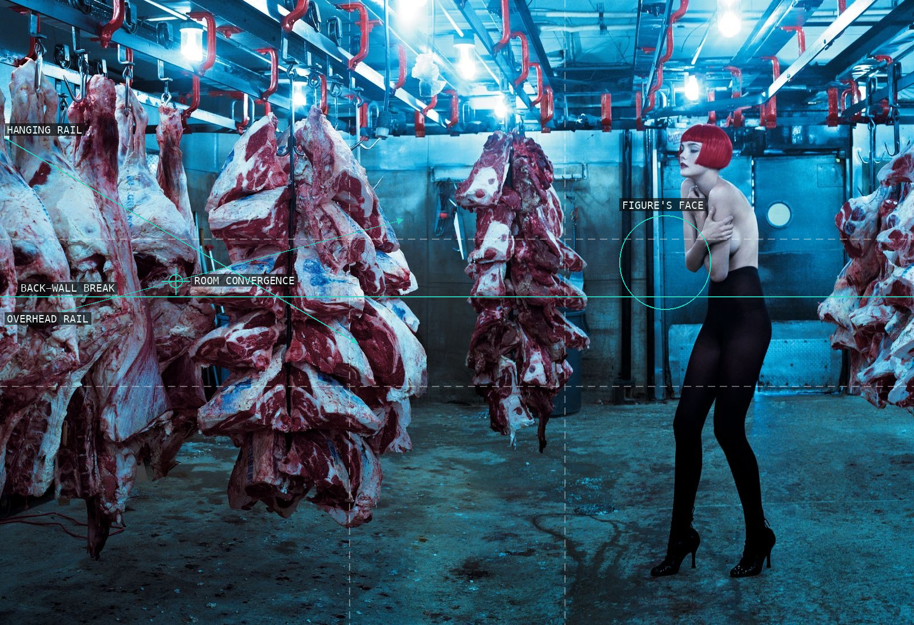
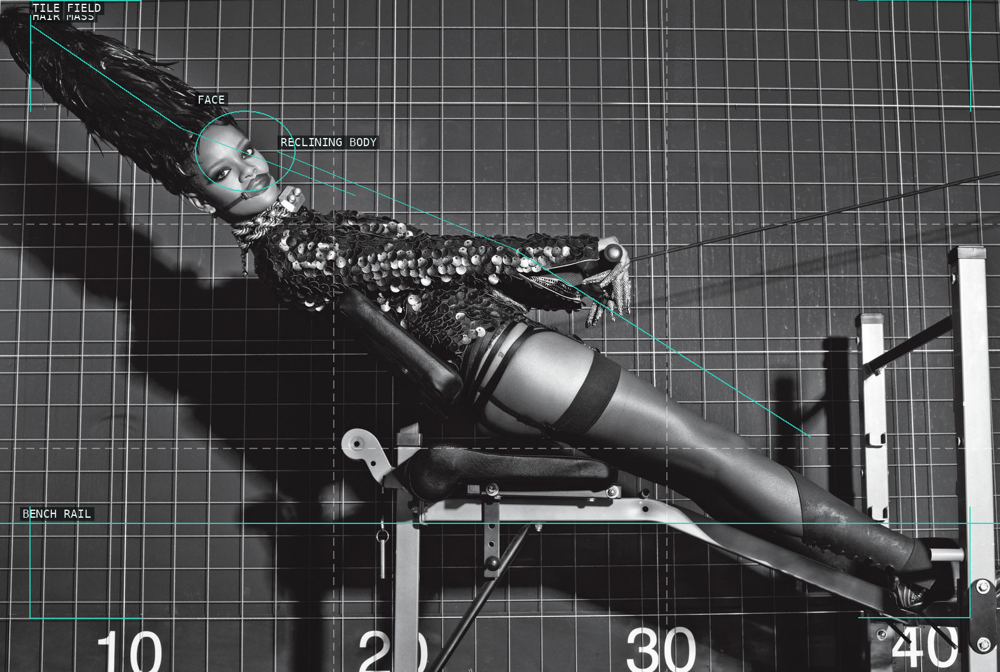
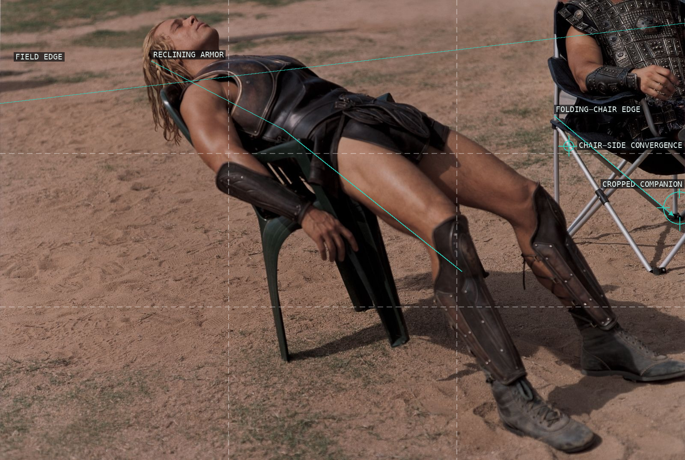
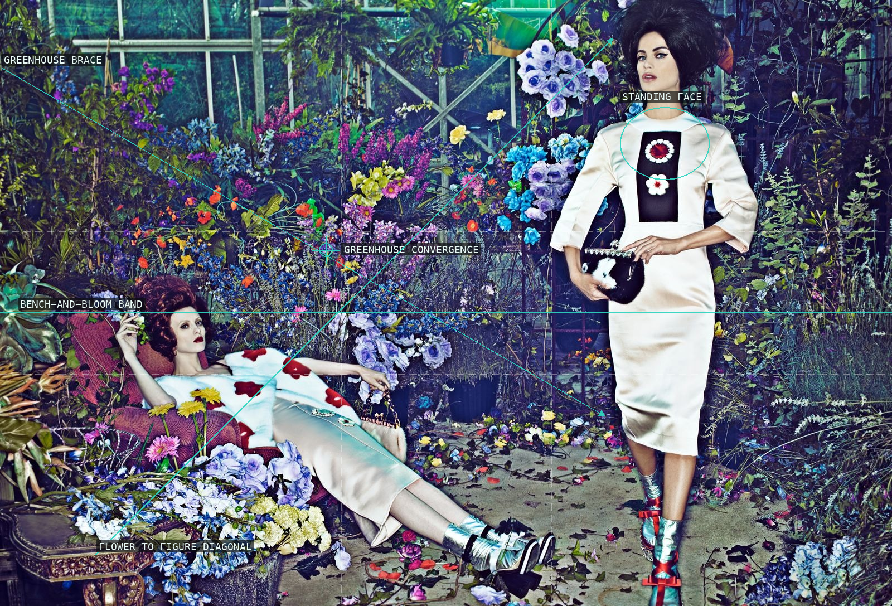
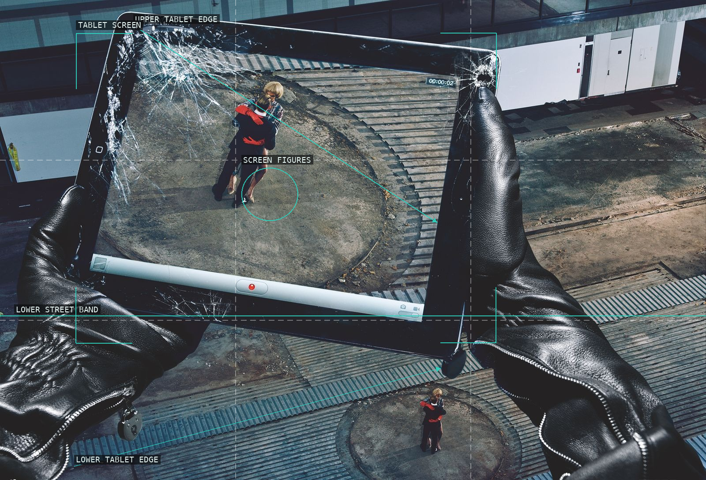
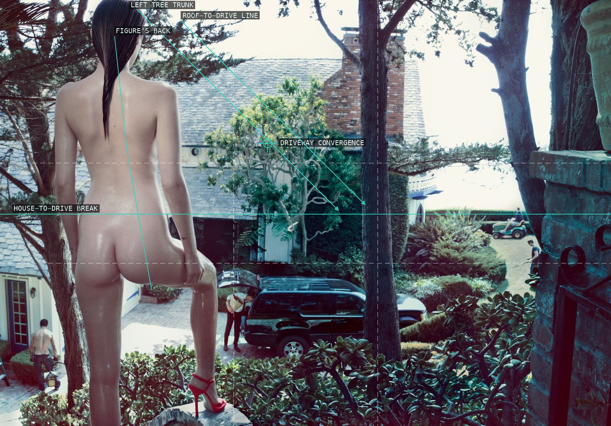
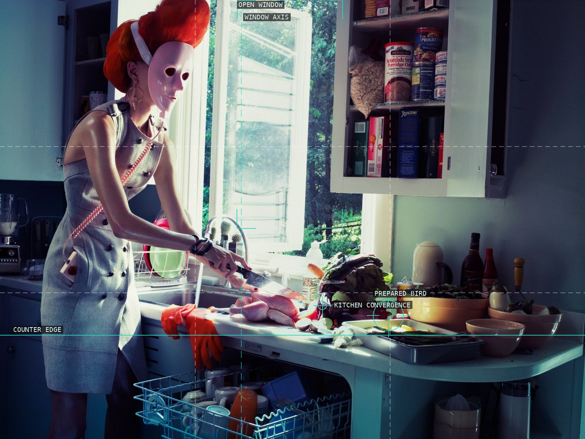
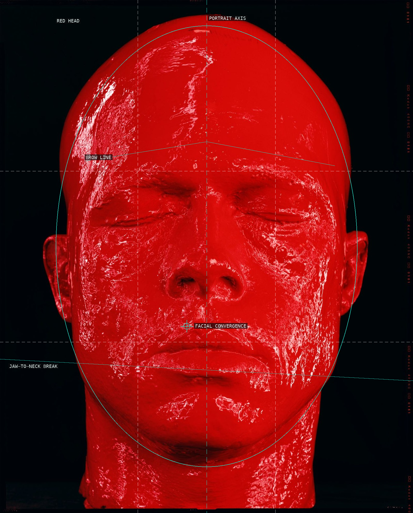

/* steven-klein - proofs */
10 plates. Deterministic overlays rendered by the composition-analysis skill.

01-horse-therapy-pool-2005
The deck's tightening arcs enclose two unequal living anchors in the blue pool.

02-out-of-this-world-2013
A low road crest stages the foreground body between a giant near bike and its distant echo.

03-frozen-flesh-2-2004
Cold rails and hanging masses drive the room leftward while the small figure holds the exposed right.

04-rihanna-vogue-italia-2009
A diagonal reclining body interrupts the repeated tile grid with a deliberately theatrical silhouette.

05-brad-pitt-troy-2004
The reclining armored body is made unstable by an assertive cropped figure at the right edge.

06-toxic-bloom-2012
Dense flower color is organized by greenhouse braces and answered by the white standing figure.

07-unseen-unheard-2014
The cracked tablet turns surveillance into a nested frame, repeated again by the figures below it.

08-suburbia-29-2008
The looming foreground body acts as a vertical curtain over a compact suburban scene.

09-suburbia-11-2007
A masked cook and a crowded counter make domestic space feel like a brightly lit stage.

10-brad-pitt-luomo-vogue-2004
The frontal red head is held almost symmetrically against an engulfing black field.